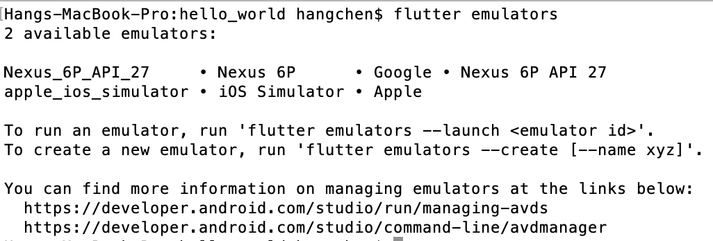
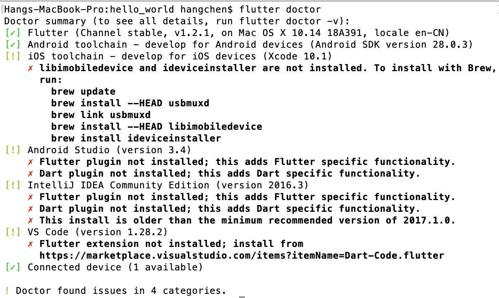
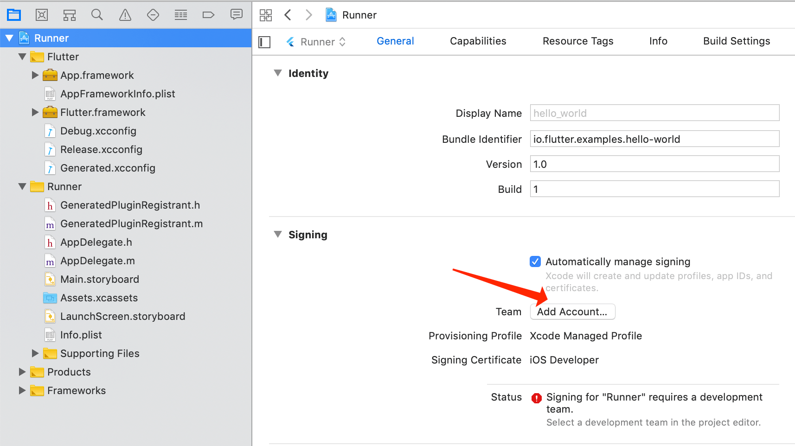
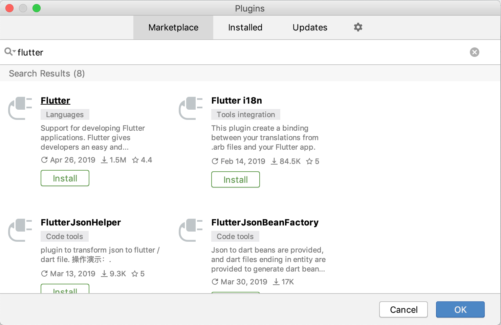
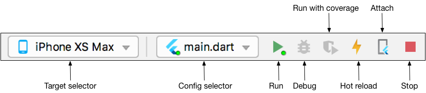
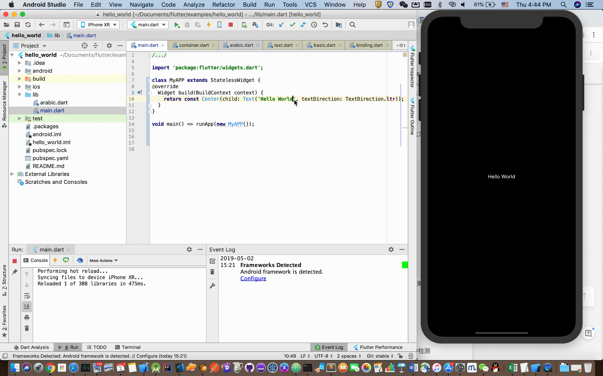
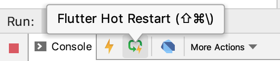

- 00 开篇词 为什么每一位大前端从业者都应该学习Flutter？.md.html
- 01 预习篇 · 从0开始搭建Flutter工程环境.md.html
- 02 预习篇 · Dart语言概览.md.html
- 03 深入理解跨平台方案的历史发展逻辑.md.html
- 04 Flutter区别于其他方案的关键技术是什么？.md.html
- 05 从标准模板入手，体会Flutter代码是如何运行在原生系统上的.md.html
- 06 基础语法与类型变量：Dart是如何表示信息的？.md.html
- 07 函数、类与运算符：Dart是如何处理信息的？.md.html
- 08 综合案例：掌握Dart核心特性.md.html
- 09 Widget，构建Flutter界面的基石.md.html
- 10 Widget中的State到底是什么？.md.html
- 11 提到生命周期，我们是在说什么？.md.html
- 12 经典控件（一）：文本、图片和按钮在Flutter中怎么用？.md.html
- 13 经典控件（二）：UITableView_ListView在Flutter中是什么？.md.html
- 14 经典布局：如何定义子控件在父容器中排版的位置？.md.html
- 15 组合与自绘，我该选用何种方式自定义Widget？.md.html
- 16 从夜间模式说起，如何定制不同风格的App主题？.md.html
- 17 依赖管理（一）：图片、配置和字体在Flutter中怎么用？.md.html
- 18 依赖管理（二）：第三方组件库在Flutter中要如何管理？.md.html
- 19 用户交互事件该如何响应？.md.html
- 20 关于跨组件传递数据，你只需要记住这三招.md.html
- 21 路由与导航，Flutter是这样实现页面切换的.md.html
- 22 如何构造炫酷的动画效果？.md.html
- 23 单线程模型怎么保证UI运行流畅？.md.html
- 24 HTTP网络编程与JSON解析.md.html
- 25 本地存储与数据库的使用和优化.md.html
- 26 如何在Dart层兼容Android_iOS平台特定实现？（一）.md.html
- 27 如何在Dart层兼容Android_iOS平台特定实现？（二）.md.html
- 28 如何在原生应用中混编Flutter工程？.md.html
- 29 混合开发，该用何种方案管理导航栈？.md.html
- 30 为什么需要做状态管理，怎么做？.md.html
- 31 如何实现原生推送能力？.md.html
- 32 适配国际化，除了多语言我们还需要注意什么_.md.html
- 33 如何适配不同分辨率的手机屏幕？.md.html
- 34 如何理解Flutter的编译模式？.md.html
- 35 Hot Reload是怎么做到的？.md.html
- 36 如何通过工具链优化开发调试效率？.md.html
- 37 如何检测并优化Flutter App的整体性能表现？.md.html
- 38 如何通过自动化测试提高交付质量？.md.html
- 39 线上出现问题，该如何做好异常捕获与信息采集？.md.html
- 40 衡量Flutter App线上质量，我们需要关注这三个指标.md.html
- 41 组件化和平台化，该如何组织合理稳定的Flutter工程结构？.md.html
- 42 如何构建高效的Flutter App打包发布环境？.md.html
- 43 如何构建自己的Flutter混合开发框架（一）？.md.html
- 44 如何构建自己的Flutter混合开发框架（二）？.md.html
- 特别放送 温故而知新，与你说说专栏的那些思考题.md.html
- 结束语 勿畏难，勿轻略.md.html
- 捐赠
01 预习篇 · 从0开始搭建Flutter工程环境
你好，我是陈航。
俗话说，工欲善其事，必先利其器。任何一门新技术、新语言的学习，都需要从最基础的工程环境搭建开始，学习Flutter也不例外。所以，作为专栏的第一篇文章，我会与你逐一介绍Flutter的开发环境配置，并通过一个Demo为你演示Flutter项目是如何运行在Andorid和iOS的模拟器和真机上的。如果你已经掌握了这部分内容，那可以跳过这篇预习文章，直接开始后面内容的学习。
由于是跨平台开发，所以为了方便调试，你需要一个可以支持Android和iOS运行的操作系统，也就是macOS，因此后面的内容主要针对的是在macOS系统下如何配置Flutter开发环境。
如果你身边没有macOS系统的电脑也没关系，在Windows或Linux系统上配置Flutter也是类似的方法，一些关键的区别我也会重点说明。但这样的话，你就只能在Android单平台上开发调试了。
准备工作
安装Android Studio
Android Studio是基于IntelliJ IDEA的、Google官方的Android应用集成开发环境(IDE)。
我们在官网上找到最新版（截止至本文定稿，最新版为3.4），下载后启动安装文件，剩下的就是按照系统提示进行SDK的安装和工程配置工作了。
配置完成后，我们打开AVD Manager，点击“Create Virtual Device”按钮创建一台Nexus 6P模拟器，至此Android Studio的安装配置工作就完成了。
安装Xcode
Xcode是苹果公司官方的iOS和macOS应用集成开发环境(IDE)。它的安装方式非常简单，直接在macOS系统的App Store搜索Xcode，然后安装即可。
安装完成后，我们会在Launchpad看到Xcode图标，打开它，按照提示接受Xcode许可协议，以及安装配置组件就可以了。
配置完成后，我们打开Terminal，输入命令open -a Simulator打开iOS模拟器，检查 Hardware>Device 菜单项中的设置，并试着在不同的模拟器之间做切换。
至此，Xcode的安装配置工作也就顺利完成了。
安装Flutter
Flutter源站在国内可能不太稳定，因此谷歌中国开发者社区（GDG）专门搭建了临时镜像，使得我们的Flutter 命令行工具可以到该镜像站点下载所需资源。
接下来，我们需要配置镜像站点的环境变量。对于macOS和Linux系统来说，我们通过文本编辑器，打开~/.bash_profile文件，在文件最后添加以下代码，来配置镜像站点的环境变量：
export PUB_HOSTED_URL=https://pub.flutter-io.cn
export FLUTTER_STORAGE_BASE_URL=https://storage.flutter-io.cn
而对于Windows系统来说，我们右键点击计算机图标，依次选择属性–>高级系统设置–>高级–>环境变量，新建用户变量PUB_HOSTED_URL，其值为https://pub.flutter-io.cn；随后新建FLUTTER_STORAGE_BASE_URL，其值为https://storage.flutter-io.cn，重启电脑即可完成配置。
到这里，我们就完成了镜像的配置。
不过，由于GDG并不是官方组织，因此Flutter团队也无法保证此服务长期可用。但是，你也不用担心，可以关注Flutter社区 Using Flutter in China，来获取其他可用的镜像资源，随时更新环境变量即可。
随后，我们再去Flutter官网，选择并下载最新的稳定版（截止至本文定稿，最新稳定版为1.5）。
接下来，我们把下载的压缩包解压到你想安装的目录，比如~/Documents或C:\src\flutter。为了可以在命令行中执行flutter命令，我们同样需要配置环境变量。
对于macOS与Linux系统，我们编辑~/.bash_profile文件，把以下代码添加至文件最后，将flutter命令的执行路径追加到环境变量PATH中：
export PATH=~/Documents/flutter/bin:$PATH
而对于Windows系统，我们在当前用户变量下Path，以; 为分隔符，在其后追加flutter命令行的全路径C:\src\flutter\bin，重启电脑即可完成配置。
到这里，我们就完成了Flutter SDK的安装。
打开Flutter根目录，我们可以发现有一个examples文件夹，里面是一些基本的flutter示例。在今天这篇文章中，我会以hello_world示例为例，和你演示一下如何在模拟器和真机中运行Flutter项目。
首先，我给你介绍的是通过Flutter命令行运行的模式。进入hello_world目录，输入flutter emulators命令，查看当前可用的模拟器：

图1 查看可用的flutter模拟器
可以看到，我们刚刚创建的两台模拟器，也就是Nexus 6P和iOS模拟器都已经在列表中了。于是，我们启动iOS模拟器，运行Flutter项目：
flutter emulators --launch apple_ios_simulator
flutter run
等待10秒左右，一个熟悉的hello world大屏幕就出现在我们面前了：
图2 Flutter demo
Android模拟器的启动和运行，也与之类似，我就不再赘述了。
不过，使用命令行的方式来开发调试Flutter还是非常不方便，更高效的方式是配置Android和iOS的集成开发环境。
Flutter 提供了一个命令flutter doctor协助我们安装 Flutter的工程依赖，它会检查本地是否有Android和iOS的开发环境，如果检测到依赖缺失，就会给出对应依赖的安装方法。
接下来，我们试着运行下flutter doctor这条命令，得到了如下图所示的结果：

图3 flutter doctor命令示意
可以看到，flutter doctor检测出了iOS工具链、Android Studio工程这两项配置中的问题。此外，由于我的电脑还安装了IDEA和VS Code，而它们也是Flutter官方支持的IDE，因此也一并检测出了问题。
接下来，我们根据运行flutter doctor命令得到的提示，来分别解决iOS工具链和Android Studio工程配置问题。
iOS工具链设置
现在，我们已经可以在iOS模拟器上开发调试Flutter应用了。但要将Flutter应用部署到真实的iOS设备上，我们还需要安装一些额外的连接控制命令工具（就像通过电脑的iTunes给手机安装应用一样），并申请一个iOS开发者账号进行Xcode签名配置。
依据提示，我们首先安装libimobiledevice和ideviceinstaller这两项依赖：
brew update
brew install --HEAD usbmuxd
brew link usbmuxd
brew install --HEAD libimobiledevice
brew install ideviceinstaller
其中，usbmuxd是一个与iOS设备建立多路通信连接的socket守护进程，通过它，可以将USB通信抽象为TCP通信；libimobiledevice是一个与iOS设备进行通信的跨平台协议库；而ideviceinstaller则是一个使用它们在iOS设备上管理App的工具。
现在，你不了解它们的具体作用也没关系，只要知道安装了它们，Flutter就可以进行iOS真机的开发调试就可以了。
然后，进行Xcode签名配置。
打开hello_world项目中的ios/Runner.xcworkspace，在Xcode中，选择导航面板左侧最上方的Runner项目。

图4 Flutter Xcode签名配置
在General > Signing > Team 中，我们需要配置一下开发团队，也就是用你的Apple ID登录Xcode。当配置完成时，Xcode会自动创建并下载开发证书。
任意Apple ID都支持开发和测试，但如果想将应用发布到App Store，则必须加入Apple开发者计划。开发者计划的详细信息，你可以通过苹果官方的compare memberships了解，这里我就不再展开了。
最后，当我们第一次连接真机设备进行开发时，Xcode会在你的帐户中自动注册这个设备，随后自动创建和下载配置文件。我们只需要在真机设备上，按照手机提示，信任你的Mac和开发证书就可以了。
至此，我们就可以在iOS真机上开发调试Flutter项目了。
Android 工具链配置
相对于iOS工具链的设置，Android工具链配置就简单多了，这是因为Google官方已经在Android Studio中提供了Flutter和Dart这两个插件。因此，我们可以通过这两个工程插件，进行Flutter项目的管理以及开发调试。又因为Flutter插件本身依赖于Dart插件，所以我们只安装Flutter插件就可以了。

图5 Flutter插件安装
启动Android Studio，打开菜单项 Preferences > Plugins，搜索Flutter插件并点击 install进行安装。安装完毕后重启Android Studio，Flutter插件就生效了。
由于Android Studio本身是基于IDEA开发的，因此IDEA的环境配置与Android Studio并无不同，这里就不再赘述了。
对于VS Code，我们点击View->Command Palette，输入”install”，然后选择”Extensions：Install Extension”。在搜索框中输入flutter，选择安装即可。
至此，Android的工具链配置也完成了。
尽管Android Studio是Google官方的Android集成开发环境，但借助于Flutter插件的支持，Android Studio也因此具备了提供一整套Flutter开发、测试、集成打包等跨平台开发环境的能力，而插件底层通过调用Xcode提供的命令行工具，可以同时支持开发调试及部署iOS和Android应用。
因此，我后续的分享都会以Android Studio作为讲解Flutter开发测试的IDE。
运行Flutter项目
用Android Studio打开hello_world工程（Open an existing Android Studio Project），然后定位到工具栏：

图6 Flutter工具栏
在Target selector中，我们可以选择一个运行该应用的设备。如果没有列出可用设备，你可以采用下面的两种方式：
- 参考我在前面讲到的方法，也就是打开AVD Manager并创建一台Android模拟器；或是通过open -a Simulator 命令，在不同的iOS模拟器之间进行切换。
- 直接插入Android或iOS真机。
hello_world工程稍微有点特殊，因为它提供了两个Dart启动入口：一个英文版的hello world-main.dart，和一个阿拉伯语版的hello world-arabic.dart。因此，我们可以在Config selector中进行启动入口的选择，也可以直接使用默认的main.dart。
在工具栏中点击 Run图标，稍等10秒钟左右，就可以在模拟器或真机上看到启动的应用程序了。
对于Flutter开发测试，如果每次修改代码都需要重新编译加载的话，那需要等待少则数十秒多则几分钟的时间才能查看样式效果，无疑是非常低效的。
正是因为Flutter在开发阶段使用了JIT编译模式，使得通过热重载（Hot Reload）这样的技术去进一步提升调试效率成为可能。简单来说，热重载就是在无需重新编译代码、重启应用程序、丢失程序执行状态的情况下，就能实时加载修改后的代码，查看改动效果。
备注：我会在“02 | 预习篇 · Dart语言概览”中，与你分析Flutter使用Dart语言，同时支持AOT和JIT。
就hello_world示例而言，为了体验热重载，我们还需要对代码做一些改造，将其根节点修改为StatelessWidget：
import 'package:flutter/widgets.dart';
class MyAPP extends StatelessWidget {
@override
Widget build(BuildContext context) {
return const Center(child: Text('Hello World', textDirection: TextDirection.ltr));
}
}
void main() => runApp(new MyAPP());
点击Run图标，然后试着修改一下代码，保存后仅需几百毫秒就可以看到最新的显示效果。

图7 热重载
是不是很Cool！但是，热重载也有一定的局限性，并不是所有的代码改动都可以通过热重载来更新。
对hello_world示例而言，由于Flutter并不会在热重载后重新执行main函数，而只会根据原来的根节点重新创建控件树，因此我们刚才做了一些改造之后才支持热重载。
关于Flutter热重载的原理以及限制原因，我会在后面“34 | Hot Reload是怎么做到的？”文章，和你详细分析。现在，你只需要知道，如果热重载不起作用的时候，我们也不需要进行漫长的重新编译加载等待，只要点击位于工程面板左下角的热重启（Hot Restart）按钮就可以以秒级的速度进行代码重编译以及程序重启了，而它与热重载的区别只是因为重启丢失了当前程序的运行状态而已，对实际调试也没什么影响。

图8 热重启
总结
通过今天的内容，相信你已经完成了Flutter开发测试环境的安装配置，对如何在安装过程中随时检测工程依赖，以及如何分别在Android和iOS真机及模拟器上运行Flutter程序有了一定的理解，并对Flutter开发调试常用工具有了初步的认知。
善用这些集成工具能够帮助我们能提升Flutter开发效率，而这些有关工程环境的基础知识则为Flutter的学习提供了支撑。这样，如果你后续在开发测试中遇到了环境相关的问题，也就知道应该如何去解决。
思考题
你在搭建Flutter工程环境的过程中，遇到过哪些问题，又是怎么解决的呢？
欢迎留言告诉我，我们一起讨论。感谢你的收听，也欢迎你把这篇文章分享给更多的朋友一起阅读。
© 2019 - 2023 Liangliang Lee. Powered by gin and hexo-theme-book.